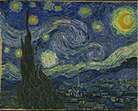

|
During the nineteenth century there was an increased international
interest in the work of seventeenth-century Dutch landscapists.
This sparked many Dutch artists to develop a new appreciation
for their artistic heritage, particularly landscapes. This genre
of painting was revitalized in the work of Hague School artists
such as Anton Mauve and Jacob Maris. In works like Mauve's Changing
Pasture (1880's) these artists celebrated Holland's
rich, agrarian past. Both their seventeenth-century predecessors
and the French Barbizon School influenced these artists. The
Hague School used a muted color palette similar to earlier Dutch
artists. The group used a naturalistic style similar to the
Barbizon School, but gave their subjects a more sentimental
feeling.[1]
It was against this backdrop of renewed artistic
ferment that the young Vincent van Gogh found part of his inspiration
to become an artist. Van Gogh wrote of his admiration for the
Hague School, particularly its artists’ ability to capture
nature on canvas. He commented, “A picture by Mauve, Maris,
or Israëls says more, and says it more clearly than nature
herself.” [2]
This love of nature and peasant life also had
its roots in his early childhood. His father, Theodorus van
Gogh, had been a minister in the Groningen sect of the Dutch
Reformed Church, whose members celebrated God's divine presence
in the natural world.[3] Evidence of this is found in Van Gogh's
own writings. Van Gogh reminisced about his childhood love of
nature: “Has everybody been thoughtful as a child, has
everyone who has seen them really loved the heath, fields, meadow,
woods.”[4]
After several failed attempts at various careers,
in 1883 Van Gogh returned home to the Netherlands in 1883, where
he decided to become an artist. Here he depicted the Dutch countryside
of Drenthe. He felt that the land had a timeless quality, which
harkened back to a purer, simpler time before the rise of modern
industrialization. He wrote, “If you come to the remote
back county of Drenthe…you will feel as if you lived in
the time of Van Goyen, Ruisdael…such natural surroundings…roused
in the heart…something of that free, cheerful spirit of
former times.”[5] He felt that his depictions of the countryside
linked him to the great Dutch masters of the past.
During this period, Van Gogh continued his
artistic exploration of the nobility of peasant labor and its
connection with the sanctity of work and the land. This was
accomplished through his depiction of the weavers in the village
of Nuenen, as seen in his Weaver
with a View of Nuenen Tower (1884).
Van Gogh depicts the weaver actively working
at his loom. Through the open window, we can see the countryside,
with a woman picking crops and a church steeple in the distance.
Here he depicts all the things that he values: the dignity of
manual labor (as seen in the weaver working on the mechanical
loom) and the importance of one who labors close to nature (represented
by the woman toiling in the field). All this takes place in
the presence of God, symbolized by the church steeple in the
distance. The presence of the steeple also links the painting
visually with the landscape works of his Dutch predecessors.
The symbolism of this painting is similar, in certain respects,
to images such as Jacob van Ruisdael's View
of Haarlem with Bleaching Grounds (1665)[6].
It was also during this period that Van Gogh
began to work with a perspective frame. The frame had strings
that ran through its center. They were used to line up the landscape
so the artist could paint it. Debora Silverman has pointed out
that Van Gogh came to associate his frame with that of the weavers.
He had been taught to think of painting as a craft by his secondary
school teacher, Constantijn Huysmans. Silverman argues that
Van Gogh thought of himself as a painter-artisan, weaving his
paintings with his perspective frame.[7]
At the same time, Van Gogh was also developing
his own color theories. He based them on the complementary color
theories of Michel Chevreul, director of the Gobelins Tapestry
Works.[8] Inspired by Chevreul's work in the weaving industry,
Van Gogh kept a box of colored yarn, which he used as a complementary
color palette. In addition, Van Gogh thickened his brush stroke
in order to give his paintings the feeling of woven cloth.[9]
In 1886, Van Gogh moved to Paris. Here he experimented with
new painting techniques, like Pointillism, which caused him
to lighten his color palette. He began to use colors more arbitrarily
in order to express emotion. This trend, which affected his
later landscape paintings, would continue to develop throughout
his career.[10]
In 1888, growing weary of the hectic city life
in Paris, he moved to Arles, a small town in the South of France.
It reminded him of his home in Holland. Van Gogh wrote that
the landscape was “exactly like Holland in character.”[11]
In Arles, he returned to two of his major subjects: the peasant
and the landscape.
While in Arles, Van Gogh was joined by his
friend Paul Gauguin. They worked together for two months, but
tensions soon arose, resulting in Van Gogh's mental breakdown.[12]
In May 1889, Van Gogh, realizing that he could no longer live
on his own, and voluntarily checked himself into the asylum
of St. Paul-de-Mausole in St. Rémy de Provence. While
at the hospital, Van Gogh continued to paint, at times in the
surrounding countryside. He also painted the view from his hospital
room. He was particularly fascinated by the stars of the early
morning sky. This article will examine Van Gogh's most famous
star filled image, Starry Night (1889).
|  |
| Vincent
van Gogh, Starry Night, 1889, oil on canvas, 29
x 36.25 inches. Acquired through the Lillie P. Bliss Bequest
(472.1941). The Museum of Modern Art, New York, NY, USA.
Digital image © The Museum of Modern Art/Licensed by
SCALA/Art Resource, NY. |
Van Gogh's painting gives us a utopian depiction
of a small, picturesque village seen from a distance. Its most
prominent building is its church, which dominates the center
of the hamlet with its tall, thin spire. The small community
is nestled in what appears to be the Provencal countryside near
the asylum. In the background are the rugged Alpilles Mountains.
A twisted cypress tree dominates the foreground, to the left
of the village. The presence of the native cypress and the distant
Alpilles both help identify this landscape as the one near the
asylum. However, the most striking feature of the image is its
dramatically rendered, star-filled evening sky. It contains
eleven stars, whose blazing auras illuminate the heavens. The
brightest star is located near the horizon, just to the right
of the cypress. In the upper right corner, we see a crescent
moon whose aura also illuminates the image. The central portion
of the sky is dominated by a swirling wave-like pattern. Lastly,
we see another undulating pattern, in the lower portion of the
sky, running just above the hills.
Most scholars have pointed out that the scene
is imaginary. It has its roots in the Provencal landscape around
St. Rémy, in Van Gogh's Dutch homeland and perhaps even
in literature, specifically, the work of George Eliot.[13] Van
Gogh placed a Dutch church from his childhood memory in his
St. Rémy landscape. The landscape, minus the village,
was visible from his cell
window. Here we see Gauguin's influence on the artist. He
had encouraged Van Gogh to paint from his imagination.[14]
Because Van Gogh's cell was located on the second
floor, he gave the painting a high vantage point. The presence
of the Alpilles Mountains confirms an easterly view.[15] Scholars
have deduced that the cypress was also visible from his room,
based on an old advertisement
for the asylum.[16]
The painting looks as though it was viewed
through the artist's cell window. Deborah Silverman has pointed
out that during his Nuenen period, Van Gogh would use a window
as a substitute for his perspective frame.[17] This is confirmed
by the artist. He wrote, in May 1889, “ through the iron
barred window, I see a square field of wheat in an enclosure,
a perspective like a Van Goyen, above which I can see the sunrising.”[18]
The view from Van Gogh's cell window may be seen here.
Silverman also felt that Van Gogh's use of
the perspective frame had symbolic religious significance linked
to one of his favorite books, John Bunyan's Pilgrim's Progress
(1678). In the book, Bunyan used the idea of a spyglass as a
metaphoric tool for spiritual focus. Silverman believed Van
Gogh thought of his perspective frame as a spyglass which he
used to create his paintings.[19] This idea was confirmed by
the artist when he wrote, “I think you can imagine how
delightful it is to turn this spy-hole frame on the sea or on
the snowy fields in winter.”[20] With this in mind, Van
Gogh may have wished the viewer of Starry Night to see the landscape
as he did, through his window, like a perspective-frame spyglass;
focused on the church, the symbol of the heavenly city of Jerusalem.
The painting's high vantage point, panoramic
view with its large expanse of sky, and distant church link
it visually with artists of both The Hague School and the seventeenth
century Dutch landscapists. Van Gogh similarly used dual perspective
points, created by the cypress in the foreground and the church
steeple in the distance.[21]
This use of perspectival distance might also
have deep religious significance. The far-off church often represents
the heavenly city of Jerusalem in seventeenth-century landscape
painting.[22] It probably serves a similar function here. The
church is Dutch in style with a pointed steeple. The actual
church of St. Martin in St. Rémy had a dome and was not
visible from Van Gogh's cell.[23]
The depiction of a Dutch church and Dutch formal
elements such as the foregrounded tree is also symbolic of Van
Gogh's wish to return home during this stressful time in the
asylum. On numerous occasions, Van Gogh wrote that he wished
to “return north.”[24]
The cypress in the foreground may also serve
a dual function, both compositional and symbolic.[25] The tree,
like the church steeple, is used to guide our eyes upward to
look at the stars. To Van Gogh, the cypress had a deeper spiritual
meaning. In his letter, he referred to these trees as “funeral
cypresses.”[26] Around the Mediterranean, cypresses were
planted in cemeteries. Ancient peoples also considered them
symbols of immortality because of their long life.[27] The blackish
green color of these trees also holds a similar meaning.[28]
Van Gogh's flame-like treatment of the tree branches gives one
the sensation that it is on fire. Fire has often been associated
with rebirth or immortality. As a phoenix was reborn from fire,
and then ascended skyward, so too, the flame-like branches of
the cypress rise heavenward in the painting, suggesting immortality.[29]
Van Gogh said that the trees reminded him of
“line and proportion like that of an Egyptian obelisk.”[30]
He knew of the obelisk’s association with the life-giving
powers of the Egyptian Sun God, Ra. The obelisk represented
the sun's rays and Van Gogh had referred to the Provencal sun
as “the good god sun.”[31]
Van Gogh's choice of the cypress can also be
understood as a way to celebrate the specificity of the Provencal
landscape. The cypress, like the olive tree (another favorite
subject during this period), was native to the region. Possibly,
Van Gogh identified with these hearty trees, which could survive
in the harsh terrain around the asylum. In the past, he had
referred to himself as “course” and “rough”[32],
both words that can be used to describe these trees.
However, the main focus of the work is the
heavenly bodies that fill the night sky. Scholars have attempted
to identify the stars. The star lowest to the horizon is Venus,
the Morning Star.[33] This is corroborated by Van Gogh, who
wrote, “This morning I saw the country from my window
a long time before sunrise with nothing but the Morning Star.”[34]
The same scholars have also debated over the identification
of the other stars.[35]
Like the rest of the elements in the work,
the stars had a spiritual meaning. Since he was a young boy,
Van Gogh had a deep fascination with the night sky. Based on
believes of the Groningen sect he learned as a child, he associated
the celestial bodies with the divine presence of God in the
world.[36] Even after he became disenchanted with organized
religion, Van Gogh still felt the spiritual pull of the stars.
He wrote in 1888, "[when] I have the terrible need of I
dare say religion…then I go outside at night and paint
the stars.”[37]
Van Gogh's depiction of stars can be linked to several literary
sources. The eleven stars in the sky may symbolize the Biblical
story of Joseph. The story of Joseph is one of suffering and
spiritual triumph. This would have fit in well with Van Gogh's
mind set at the time, as he struggled with his mental disability
hoping for eventual salvation.[38]
The painting may also be connected to the poet
Walt Whitman's book Leaves of Grass (1855). Excerpts
from the book were available in French in 1888; including poems
from a section entitled “From Noon to Starry Night.”[39]
Whitman and Van Gogh had a similar ideological outlook. Both
believed in the presence of the divine in nature and celebrated
it in their work. Each man rejected organized religion. They
also had similar tastes in literature and art. Both read Dickens
and Michelet and loved the paintings of Millet. In an 1888 letter,
Van Gogh wrote of his admiration for Whitman's work.[40]
In Starry Night, Van Gogh captured
the essential character of Whitman's work. In his poetry, there
are numerous references to stars with their connection to the
spiritual and the eternal. For both men, stars symbolized immortality.[41]
Like Van Gogh, Whitman had a particular fascination with Venus,
the “Morning Star.”[42]
Van Gogh noted seeing the “Morning Star”
from his cell window on several occasions. He wrote of his association
between the soul’s survival among the stars after death.
He put down these thoughts in a letter, wondering, “Perhaps
death is not the hardest thing in a painter's life…But
looking at the stars makes me dream. Why shouldn't the shining
dots of the sky be as accessible as the black dots on the map
of France? Just as we take a train—we take death to reach
a star.”[43]
The connection between Van Gogh and Whitman
goes beyond the stars and their symbolic meaning. In other poems,
such as “Weave In, My Hardy Life,” Whitman used
weaving imagery to celebrate the creative life force in the
world and in humanity. This type of imagery would have had great
appeal for Van Gogh. He often depicted scenes celebrating the
nobility of manual labor.[44] He would have also been interested
in the weaving imagery for he thought of his canvases as tapestries
interwoven with color. Also appearing high up in the heavens
is the moon, which is clearly visible among the stars. Its depiction
as a crescent also comes from Van Gogh's imagination. The moon
was actually in a gibbous phase when the painting was created.[45]
Like the stars, it too is steeped in symbolism. Van Gogh repeatedly
used the crescent moon in his work.[46] It was a personal symbol
of consolation. As a young man, he drew a crescent moon on a
page of his Psalm book. The verse next to it speaks of spiritual
hope.[47]
The moon may also refer to a passage from the
“Book of Revelations.” Meyer Schapiro saw the moon
embracing the sun in the painting. He believed that the image
may refer to a passage from “Revelations xii” which
describes the appearance of “a woman clothed with the
sun and the moon under her feet and upon her head she wore a
crown of twelve stars”.[48] If Schapiro is correct, the
painting is to be read as one with apocalyptic overtones, not
spiritual exultation, or consolation, which is more likely the
case.
To the left of the moon is a large wave-like
pattern. There has been much speculation as to its true meaning.
It could be identified as a spiral galaxy or a comet.[49] I,
myself, would argue that the wave-like pattern might depict
the strong Mistral winds that are native to the region. Van
Gogh referred to them and the difficulty they created for him
in his attempt to paint outside in the countryside.[50]
Just below the wave, we see a long horizontal
strip, which runs parallel along the horizon, following the
shape of the mountains. This may represent the pre-dawn glow
of the sunrise, since we know that the painting is focused in
an easterly direction in the hours just before sunrise.
Van Gogh used an extremely expressive brushstroke
in order to create a strong sense of rhythm in the painting.
Undulating wave-like and circular patterns appear throughout
the work. The pattern starts in the foreground bushes as small
ball-like shapes. It then begins to widen out into an undulating
shape, to accentuate the flow of the mountains in the background.
It is repeated again just above the mountains in the highlighted
horizon. It continues upward through the background of the sky,
blending into the central wave-like shape. This shape becomes
particularly important to the design composition, for here is
where the transition is made into the circular shapes repeated
in the eleven stars and their auras as well as the moon and
its outer glow.
The horizontal movement is also felt in the
roofs of the town buildings. This time the brushstrokes are
more linear, to accent the geometry of the buildings. Contrasting
the horizontality of the landscape and sky, are the vertical
waves of the cypress branches and the sharply delineated church
steeple. Van Gogh chose to outline most of the elements in his
landscape, including the cypress. This ultimately helps distinguish
the earthbound elements from the sky.
Van Gogh's trend toward stylization in this
work is based on his continued dialogue with Gauguin. He expressed
his desire “to seek a style”. He wished to make
it “more viral by deliberately drawing”.[51] He
felt that this put him in a similar category with Gauguin because
his linearity is reminiscent of his Synthetist technique. Van
Gogh wrote that, through these new techniques, they wished to
create a modern art that would give spiritual “consolation”
without overt religious symbolism, thus creating an image, which
captured the “purer nature of the countryside.”[52]
However, Van Gogh's work is more expressive and filled with
a dynamic energy than that of his compatriot. This affinity
for quick, expressive brushwork also had its roots in his Dutch
past. He had admired the spontaneous brushwork of Frans Hals.
He wrote of his admiration for Hals, “I saw Frans Hals
you know how enthusiastic I was about it…about painting
in one stroke.”[53]
The thick application of the paint in distinctive,
linear strokes reminds one of woven cloth. Perhaps, this was
a conscious choice by the artist because he thought of his paintings
as being woven on his perspective frame or loom. Van Gogh referred
to the application of his brushwork as being “interwoven
with feeling”.[54] The strokes on the mountains remind
one of tilled soil. Van Gogh liked to think of himself as a
laborer or craftsman. He described how he painted as “plowing
on my canvas as they do on their fields.”[55]
Van Gogh's choice of the complementary color
scheme served a similar function as the brushwork: expressing
a feeling. Of the expressive potential of color, he wrote, “color
suggests ardor, temperament, any kind of emotion.”[56]
He believed that the dominant color scheme of cobalt blue and
citron yellow had a direct connection to the divine. He described
the feeling of the infinite that these colors gave him, in his
description of his painting, The
Poet Eugène Boch (1888). The artist explained,
“I exaggerate the hair…pale citron yellow…I
paint infinity, a plain background of the richest blue…and
by this simple combination, the bright head against the rich
blue background, which gets a mysterious effect, like a star
in the sky in the depths of azure.”[57]
Van Gogh's association of these colors with
the divine had its roots in the work of Eugène Delacroix.
Van Gogh greatly admired Delacroix's work as a colorist. He
believed that, “By going the way of Delacroix…by
color and a more spontaneous drawing…one could express
the purer nature of the countryside.”[58] Delacroix had
depicted the image of Christ in his painting, Christ
Asleep During the Tempest (1853).
He used the complementary color combination
of citron yellow and a Prussian blue to express Christ's divinity.
He used the yellow for Christ's halo and the blue to depict
his cloak, which covered his head. Seeing this painting reinforced
this color scheme's association with the divine.[59]
This color scheme, combined with the expressive
movement of the brushwork, gives the night sky a feeling of
divine exultation. The circular strokes of citron yellow around
the stars and moon give the illusion that these heavenly bodies
vibrate with radiant energy. Van Gogh's expressive style placed
him in the forefront of the Post-Impressionist movement.[60]
Van Gogh's love of nature was one of the central
themes of his life. This resulted in his creation of a body
of work dedicated, in part, to the art of landscape painting.
He associated the landscape with the presence of God in the
world. This came out of his exposure to the Groningen School
of Protestant theology of his childhood. Through this belief
system, he came to value the importance of manual labor and
the divinity of nature. He incorporated these themes into his
work. During his hospitalization in St. Rémy, Van Gogh
had time to reflect on his childhood in Holland and the values
he held dear. This resulted in the creation of one of his most
celebrated works, Starry Night, which embodied these
principle beliefs. In this image, created partially from memory,
we see a Dutch village under a star-filled sky, a veritable
tapestry of stars, and a symbol of spiritual consolation. This
tapestry of stars, created by this weaver of images, has inspired
a similar sense of wonder in viewers for much of the twentieth
century, and will continue to fascinate well into the new millennium.
Sources>>
Author's
Bio>>
|